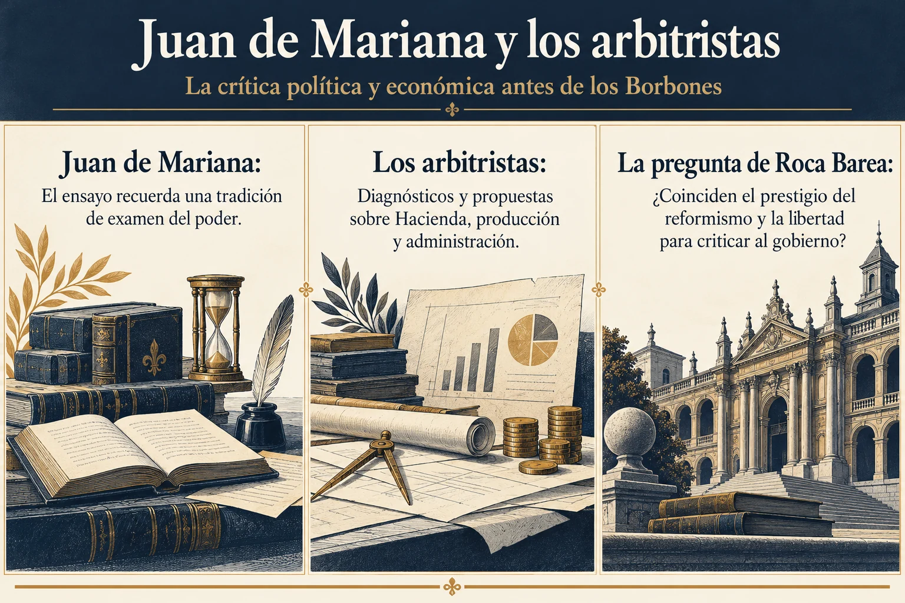

Volumen 2 · Capítulo 9 · Entrega 29
El cierre del siglo XIX y la interpretación del 98
Estudio expositivo de Fracasología de María Elvira Roca Barea
El balance de la segunda parte regresa a las palabras con que se organiza el siglo: Guerra de la Independencia y Desastre del 98. Roca Barea pide atender a su significado porque unas denominaciones habituales pueden contener ya una interpretación. En el primer caso, la defensa de la independencia frente a Napoleón queda vinculada a la experiencia de una dependencia francesa anterior, especialmente visible en las élites. La guerra revela esa situación y produce una afirmación de soberanía. El capítulo recupera así el punto de partida de Cádiz y lo relaciona con el afrancesamiento estudiado desde el cambio dinástico.
La comparación de las posibilidades de crítica bajo distintas monarquías prolonga ese argumento. La autora recuerda a Juan de Mariana y a los arbitristas para cuestionar una distribución donde la libertad pertenece siempre a las reformas borbónicas y el cierre intelectual a los Austrias. Su interés consiste en examinar qué podía decirse sobre el poder y qué significaba declararse reformista. Una crítica dirigida al desorden atribuido al pasado podía recibir protección, mientras el examen del gobierno presente encontraba mayores límites. El prestigio del reformismo no equivale, por tanto, a una capacidad permanente de cuestionar las decisiones de los gobernantes.


Ampliar imagenLeer el esquema y sus referencias
- Juan de Mariana. El ensayo recuerda una tradición de examen del poder
- Los arbitristas. Diagnósticos y propuestas sobre Hacienda, producción y administración
- La pregunta de Roca Barea. ¿Coinciden el prestigio del reformismo y la libertad para criticar al gobierno?
Fuente de lectura: Roca Barea, Fracasología (2019), apartado desarrollado en la entrega 29. Esquema expositivo de la interpretación de la autora; no cita literal.
El siglo XIX reúne además dos procesos que el ensayo considera necesario distinguir: la disolución de un gran espacio imperial y el conflicto europeo por la nueva legitimidad constitucional. España debe afrontar ambos. Roca Barea entiende que la acumulación aumenta la dificultad, pero rechaza convertirla en prueba de una incapacidad nacional exclusiva. La intervención de los Cien Mil Hijos de San Luis en 1823 recuerda, dentro de su explicación, que el final del Trienio Liberal incluye una actuación francesa. La imagen de una España enfrentada en solitario a sus propios obstáculos deja fuera relaciones exteriores decisivas.
La secuencia francesa de revoluciones, restauraciones, monarquías, repúblicas e imperios permite contextualizar la inestabilidad. La autora la presenta junto a las guerras carlistas y a las crisis españolas, y se detiene en el periodo de 1868 a 1874. El destronamiento de Isabel II, la búsqueda de otra monarquía, la experiencia republicana y la coincidencia de conflictos carlistas, cantonales y cubanos muestran una disputa por quién debe ejercer el poder y de dónde obtiene legitimidad. La comparación con la Comuna de París, que el libro recupera mediante Castelar, evidencia que los propios contemporáneos reconocían paralelismos europeos.
La Restauración consigue un periodo de mayor estabilidad, aunque la autora considera que deja sin resolver tendencias centrífugas vinculadas a la fragmentación del antiguo poder imperial. Su juicio general conserva una diferencia con el pesimismo que critica: dadas las dificultades, entiende que el país atravesó el siglo con resultados menos excepcionales y desastrosos de lo que sugiere la narración habitual. El conflicto no demuestra por sí solo una naturaleza española inclinada a destruirse. Esa atribución pertenece al modo de interpretar la experiencia, y el ensayo pide relacionarla con lo ocurrido en sociedades próximas.
El cierre del 98 plantea finalmente una desproporción de atención. Roca Barea contrasta el interés limitado que atribuye a las élites peninsulares ante las separaciones americanas de las primeras décadas con la conmoción posterior por Cuba. La diferencia abre una pregunta que el libro deja pendiente al terminar esta parte. En este volumen corresponde conservarla como tal, sin resolverla mediante argumentos de capítulos posteriores. El recorrido llega hasta el punto en que una nueva crisis puede convertirse otra vez en juicio general sobre España. La siguiente entrega de la colección será la 30, donde comienza el capítulo 10 y el examen específico de esa problematización.
Referencia de la entrega y criterio de lectura
Roca Barea (2019), capítulo 9, «Conclusiones». Notas 367–368 de la obra y desarrollo final del capítulo. La comparación con Francia y el juicio sobre el balance español pertenecen a la autora.
El texto reconstruye el argumento de Roca Barea. Las alusiones a otras obras proceden del ensayo y no implican la consulta independiente de todas ellas. Criterio editorial de la colección.
Referencia de la entrega. Roca Barea (2019), capítulo 9, «Conclusiones». Notas 367–368 de la obra y desarrollo final del capítulo. La comparación con Francia y el juicio sobre el balance español pertenecen a la autora.